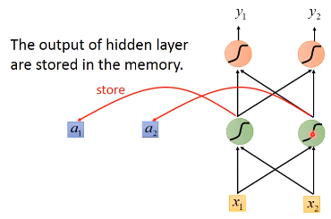
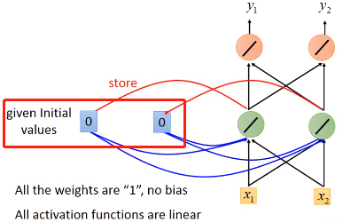
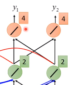
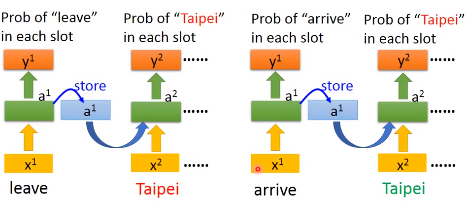
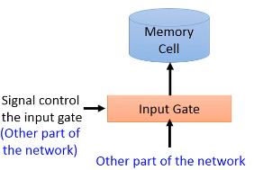
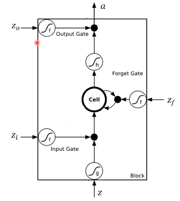
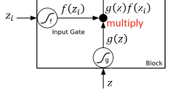
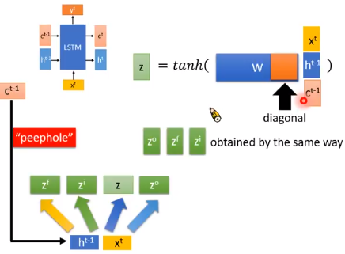
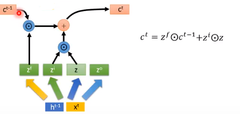
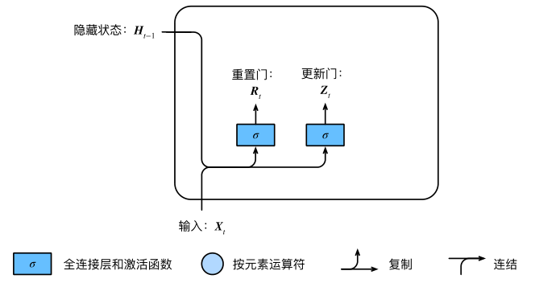

循环神经网络（RNN）入门介绍
循环神经⽹络是为更好地处理时序信息而设计的。它引⼊状态变量来存储过去的信息，并⽤其与当前的输⼊共同决定当前的输出。
循环神经⽹络常⽤于处理序列数据，如⼀段⽂字或声⾳、购物或观影的顺序，甚⾄是图像中的⼀⾏或⼀列像素。因此，循环神经⽹络有着极为⼴泛的实际应⽤，如语⾔模型、⽂本分类、机器翻译、语⾳识别、图像分析、⼿写识别和推荐系统。
引入#
对于2句话，都有Taipei这个词，但是一个是目的地，一个是出发地
如果神经网络有记忆力，能够根据上下文对同样的input词汇产生不同的输出，我们就能解决这个问题
像下面两句话，同样输入Taipei，一个输出“目的地”，一个输出“出发地”
arrive Taipei on November 2 leave Taipei on November 2
RNN#
Recurrent Neural Network（RNN）就是一个有记忆的神经网络，在隐藏层中的每个隐藏单元产生Output的时候，都会存到Memory中
下一次，当有input的时候，这个隐藏单元不仅会考虑input的值，还会考虑存在memory中的值
例子#
下面举一个例子，假设图中的RNN的所有weight都是1，没有bias，激活函数都是linear
我们的input是一个下图中的sequence
在我们使用练RNN的时候，我需要先要给memory初始值，比如这里的 0 0
现在输入[1, 1]，隐藏单元还会考虑内存中的0,0，因为我们weight都是1，所以隐藏层神经元的都是 0 + 0 + 1 + 1 =2
由于权重都是1，所以这时候网络的输出是[4, 4]
另外，刚刚隐藏层的输出[2,2]还会被存到memory中去
这时候如果我们的输入是[1,1]，隐藏层的输出就变为了[6, 6]。因为memory中存着[2,2]，输入是[1,1]，权重都为1，所以每一个隐藏层神经元的输出为1 + 1 + 2 + 2 = 6
这时候网络的输出是[12, 12]。可以看到如果memory中的值不一样，我们同样的输入会产生不同的输出。
当我们的输入是[2,2]的时候，memory中的值是[6,6]，跟前面的步骤一样，我们可以得到输出是[32, 32]。我们输入sequence的输出结果如下
调换输入sequence中的顺序，我的输出也会不一样，即RNN考虑了输入sequence的顺序
例子 #
让我们回到一开始讲的两句话，看看RNN是怎么识别Taipei的不同含义（目的地or出发地）
arrive Taipei on November 2 leave Taipei on November 2
首先，网络接收第一个单词（arrive）的输入，经过网络得到一个输出，并保存隐藏层的输出。
然后接收第二个单词（Taipei）的输入，经过网络得到输出，……，用同样的网络结构不断重复这个行为
所以当两句不同的话输入的时候，一个Taipei前面是leave，一个是arrive，而这两个的vector是不一样的，所以存在memory中的值不同，这样就会得到不同的输出
更一般地，我们的网络可以不止有一个隐藏层，而是有许多个隐藏层，每个单词输入的时候，各个隐藏层都会考虑之前存在memory中的值
两种RNN#
我们前面看到的RNN是隐藏层的输出存起来，当下一个sequence输入的时候，再读取来，这个是Elman Network
还有另一种RNN——Jordan Network，它把网络的整个输出存到memory中，下一个sequence输入时再读出来
隐藏层是没有target，而output有，所以Jordan Network一般会有比较好的表现
双向RNN（bidirectional RNN）#

我们的RNN可以是双向的，我们输入一个句子的时候，它会从句首读到句尾，但读取的方向可以反过来，从句尾读到句首，如上图中第一个结构。
我们可以同时训练一个正向的RNN和一个逆向的RNN，把这两个RNN的隐藏层输出拿出来，接给一个输出层
用双向RNN的好处是网络可以学习到更多的上下文信息，正向或者反向RNN能学习到的内容有限，只能学习到一半的信息
LSTM#
原理#
Long Short-Term Memory（LSTM），长短期记忆网络。
前面提到的Memory是最单纯的，我们随时可以把值存到Memory中去，也可以随时把值从中读出来。
但LSTM不是这样，它有3个gate：
- 1）input gate
- 2）ouput gate
- 3）forget gate
当网络中的其他部分的output想要写入memory中的时候，需要通过一个input gate，input gate打开的时候才能够把值写到里面，如果Input gate是关闭的，那么就不能把值写到里面。这个input gate是打开还是关闭是由网络自己学习的，学习什么时候打开input gate，什么时候关闭。
输出的地方也有一个output gate，这个这个output gate决定外界能否从memory中读取值。跟input gate一样，output gate的开关也由网络自己学习。
forget gate决定什么时候memory cell要把memory中的内容忘掉，这个也由网络自己学习
整个网络的结构如下图所示，我们可以把LSTM看成有4个输入，1个输出的特殊神经网络。这4个值分别是
- 想存进memory的值
- 操控input gate的信号
- 操控output gate的信号
- 操控forget gate的信号
下面是LSTM更详细的结构
其中
- 是要存到memory中的输入
- 是操控input gate的信号，是一个数值
- 是操控forget gate的信号，是一个数值
- 是操控output gate的信号，是一个数值
- 是输出
- memory cell中的初始值是
4个输入经过gate的时候常用的激活函数是 sigmoid，因为它的值在0到1之间，1代表gate打开，0代表关闭。
下面我们看看网络是怎么输入输出的，首先 和 经过神经元得到和，将两者相乘
 经过神经元得到 ，取出memory中的值，相乘得到
然后将上面得到的两个相乘的结果相加，得到。就是新的要存入memory中的值
从上面的式子可以看到，是控制能否输入的关卡，是控制是否取出memory中的值
如果为0，那么它们相乘为0，跟没有输入是一样的，如果是1，那么相乘会得到本身
是也是同样的工作原理，如果是1，那么会通过，表示之前存的值还是记得。如果是0，那么相乘得到0，相当于之前的值不记得
可以看出，forget gate打开代表记得，关闭代表忘记
接着通过，得到，让和相乘，得到输出
原理也是一样的，是1，等于可以通过output gate，否则为0，存在memory中的值无法读取出来
例子#
假设我们的网络有以下性质：
现在的网络只有一个memory cell，我们的input都是3维的vector，输出都是1维的vector。
当中的值为1时，中的值就会被写到memory中
当中的值为-1时，memory中的值就会被遗忘
当中的值为1时，我们的output gate才会输出
memory中的初始值为0
那么根据网络的性质，我们可以得到的输出和memory中的值如下图所示，其中蓝色方块代表memory中的值
具体地来看，假设我们网络的weight如下图，4个输入都由我们输入的向量乘上weight再加上bias得到。
假设网络中和现在是linear激活函数，我们输入[3,1,0]时，根据我们刚刚介绍的过程，网络的输入输出过程如下图所示
输入[4,1,0]和[2,0,0]时，结果如下图所示，网络依然没有输出
当输入[1,0,1]的时候，output gate 的值是1，所以memory中的值会取出。输入是[3,-1,0]的时候，forget gate的值是0，memory中的内容会被忘记
LSTM结构#
我们上面谈到的LSTM，其实可以变成下面这种形式
但是通常LSTM并不是这样的，它还会把输出作为下一个输入的一部分，还会加一个“peephole”，它会把存在memory中的值也作为下一个输入的一部分。
LSTM通常也不会有一层，可能会有多层
下面我们看看这种LSTM结构是如何计算的，它可以简化成下面这种形式，它有3个输入，分别是、、。
这时候我们的3个输入分别乘以各自的权重，其中的权重矩阵是对角矩阵，这是为了减少训练的参数。
像前面介绍的LSTM一样，我们其他门的输入如下图所示，各部分的的权重矩阵是不一样的，
memory cell 中要存入的内容如下，是 element wise 乘法（对应元素相乘）。
输出的和如下
最终我们得到的 LSTM 的一个 block 就像下面的样子
GRU#
表现上看，GRU会输入一个，输出一个，输入一个，输出一个。看起来很像RNN，其实它更像LSTM。GRU里面这个的作用更像是LSTM中的作用。GRU中我们可以看作是 forget gate 和 input gate 是联动的LSTM，一个开另一个就要关。
GRU（gated recurrent unit）门控循环单元，它引入了reset gate（重置门）和update gate（更新门）的概念，类似LSTM。
相较于LSTM，它只有2个gate，所以它的参数量比较少，它的思想是：旧的不去，新的不来。要把 memory 中的值清掉，才能放进新的值。
重置门的输入包括当前时间的输入和 memory 中的值，经过 sigmoid 激活函数得到输出和。
重置门和更新门的计算公式如下，其中是weight
然后我们让重置门的输出 与 memory 中的值相乘，如果结果是0，则将 memory 中的值重置为0。
跟LSTM中一样，输入跟权重相乘，然后把这个结果跟上面相乘的结果相加。
得到一个候选值，其中内容是：
从上⾯这个公式可以看出，重置门控制了上⼀时间步的 memory 如何流⼊当前时间步的候选值。
上⼀时间步的 memory 可能包含了时间序列截⾄上⼀时间步的全部历史信息。因此，重置⻔可以⽤来丢弃与预测⽆关的历史信息。
然后用当前更新门来对上⼀时间步的 memory 和当前时间步的候选值做组合，得到新的要存入 memory 中的值：
更新门取值为0的时候，新的 memory 只跟候选值有关，而候选值又是经过激活函数输出的，所以在-1和1之间。
当更新门为1的时候，新 memory 同等于上一时间点的 memory ，即不执行更新操作。
如果更新门在和（ < ）之间一直是1，那么到之间输入的信息几乎没有流入 memory 中，一直保持较早的memory。
RNN网络学习过程#
损失函数#
我们训练网络的时候，我们需要定义一个损失函数。在RNN中，我们需要怎么定义损失函数？
假设我们现在要做slot filling，我们会有训练数据，数据是一些sentence，然后需要给sentence一些label，告诉我们不同的词属于不同的slot
然后把单词输入到网络中，RNN会得到一个输出，接下来这个会和一个 reference vector 算它的 cross entropy 。
当我们输入是单词arrive的时候，应该跟“other”对应的reference vector距离越近越好，这个reference vector的长度就是我们slot的数目，后面输入的单词同理。
我们损失函数就是：每一个时间点的RNN的output跟 reference vector 的 cross entropy ，这就是我们要优化的函数。
训练过程#
训练也是使用梯度下降来更新参数，我们已经有了损失函数，我们要更新网络中某个参数的公式如下
但是为了计算方便，开发了一套算法，这套算法是BackPropagation（反向传播）的进阶版，叫做BackPropagation through time（BPTT）
它跟BackPropagation是很类似的，只是RNN在time sequence上做运算，所以需要考虑时间的信息
RNN的训练是比较困难的，一般我们都希望我们的学习曲线像下图中的蓝色曲线一样，但我们训练RNN的时候，有时候会看到绿色这条线，训练曲线剧烈抖动。
这是因为RNN的error surface（total loss对参数的变化）对参数的变化是非常崎岖的，error surface有些地方很平坦，有些地方很陡峭。
如下图我们，假设我们的起始位置是左下方的橙色点，第一次更新参数让我的 loss 上升，来到右边的橙色点
第二次更新参数的时候，我们的学习率刚好让我们来到了左上方的橙色点，这时候loss就突然增加
可以用Clipping解决这一问题，当梯度大于某个阈值的时候，就不要让梯度等于阈值
在RNN中，激活函数使用ReLU的表现通常比sigmoid差
那为什会这样？我们可以用一个直观的例子来看梯度的大小是怎么样的：就是我们把某一个参数做小小的变化，看网络的输出变化有多大。就能测出这个参数梯度的大小。
比如下面这个例子：
我们有一个简单的RNN，输入输出的weight都是1，memory接到隐层单元的weight是，隐层单元激活函数是linear，假设我们输入[1,0,...,0]，那我们的输出是。
我们改变的值，对网络的输出有多大影响，假设此时为1，那么增加0.1，网络的输出会增加特别多，所以在1的地方特别大的梯度
如果我们的学习率设小，可以弥补这种缺陷吗？我们来看一下为0.99和0.1的情况，可以发现输出都是0，说明在0.99的地方梯度变得很小。
所以学习率的设置不能改变这种局面，因为我们的梯度时大时小。
有什么技巧可以帮助我们解决RNN的这一问题？
- LSTM可以解决梯度消失的问题，但不能解决梯度爆炸的问题。所以我们可以把学习率设置小一点。
- 跟普通 RNN 相比，LSTM 在处理 memory 中的操作是不一样的。RNN中每个时间点都会更新memory中的值。LSTM中，它将 memory 乘上一个值再和输入相加的放到memory cell中。
- RNN中如果memory中的值清零了，那weight的影响就不存在了。weight 如果影响 LSTM中 memory 的值的话，这个影响会一直持续到 memory 中的内容被忘掉。一般我们需要给 forget gate 一个较大的 bias，让它在少数情况下才会清零。
RNN的输入和输出形式#
One to One：输入和输出都是一个vector。
One to Many：输入是vector，输出是vector sequence
Many to One：输入是一个vector sequence，输出是一个vector。比如情感分析，输出哪些文章是正类，哪些是负类；比如文档关键词提取；
Many to Many：输入输出都是vector sequence。输出sequence比输入sequence少的例子：比如语音识别任务，输入是声音信号（每隔一小段时间用vector表示），输出是character sequence。通常是好多个vector对应到一个character。
Sqe2Seq简介 #
要理解word sequence的含义，单词在句子的位置信息是不能忽略的。下面两句话有同样的单词，但单词的位置不同，含义也完全相反
但是如果用 bag-of-word 来描述的话，它们是完全一样的。
我们可以用Seq2Seq Auto-encoder 来考虑 word sequence 有顺序的情况，把一个 document 变成一个 vector
我们输入一个word sequence，通过一个RNN，把它变成一个embedding vector，再把这个 embedding vector 当做 Decoder 的输入，让 Decoder 造回一个一模一样的句子。
如果RNN可以做到这一件事，那么 encoder 的这个 vector 就代表 input sequence 里面重要的信息。所以 Decoder 才能根据 Encoder 的 vector，把这个序列 decode 回来。
训练Seq2Seq我们不需要labeled data，只需要有大量的文章，然后输入到网络中。
它也可以是 hierarchy 结构，我们先得到每个句子的vector，然后把这些vector加起来，变成一整个 document higher-level 的 vector。再用这个higher-level vector产生一串 sentence vector，再根据每一个 sentence vector解回 word sequence。


{kind=link}
{kind=link}
{kind=link}
{kind=link}
{kind=link}
{kind=link}
{kind=link}
{kind=link}
{kind=link}
{kind=link}
{kind=link}
{kind=link}
{kind=link}
{kind=link}
{kind=link}
{kind=link}
{kind=link}
{kind=link}
{kind=link}
{kind=link}
{kind=link}
{kind=link}
{kind=link}
{kind=link}
{kind=link}
{kind=link}
{kind=link}
{kind=link}
{kind=link}
{kind=link}
{kind=link}
{kind=link}
{kind=link}
{kind=link}
{kind=link}
{kind=link}
{kind=link}
{kind=link}
{kind=link}
{kind=link}
{kind=link}
{kind=link}
{kind=link}
{kind=link}
{kind=link}
{kind=link}
{kind=link}
{kind=link}
{kind=link}
{kind=link}
{kind=link}
{kind=link}
{kind=link}
{kind=link}
{kind=link}
{kind=link}
{kind=link}
{kind=link}
{kind=link}
【推荐】大型组态、工控、仿真、CAD\GIS 50万行VC++源码免费下载!
【推荐】阿里云爆品销量榜单出炉，精选爆款产品低至0.55折
【推荐】限时秒杀！国云大数据魔镜，企业级云分析平台
· 致园友们的一封检讨书：都是我们的错
· 数据库实例 CPU 100% 引发全站故障
· 发起一个开源项目：博客引擎 fluss
· 利路修代言、生椰拿铁断货……慢下来的瑞幸活得还挺好？
· 26元就能拨5000个骚扰电话？短信、电话骚扰为什么屡禁不止
· 为什么 iPhone 的原装充电线容易坏？
· 一片红海的手机市场，难以真我的Realme
· 苹果新系统很鸿蒙！iPad终于能写代码了，iPhone竟成异地恋神器 | WWDC 2021
» 更多新闻...